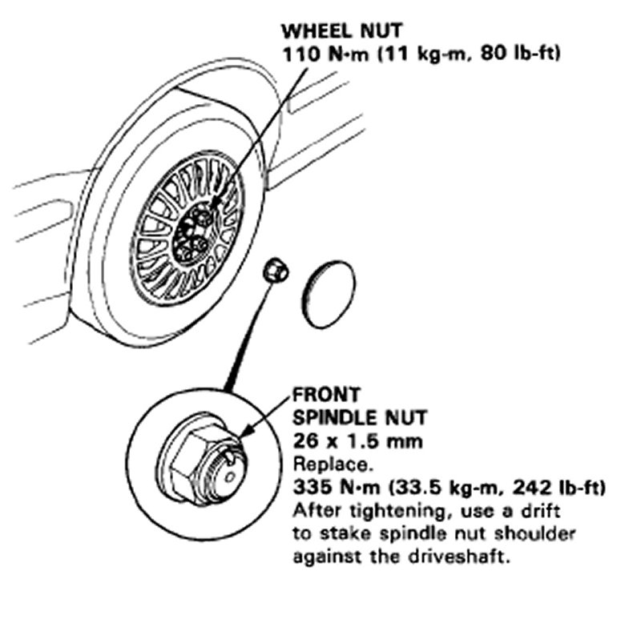
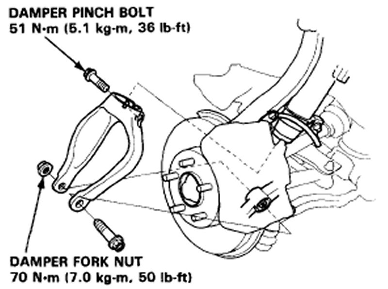
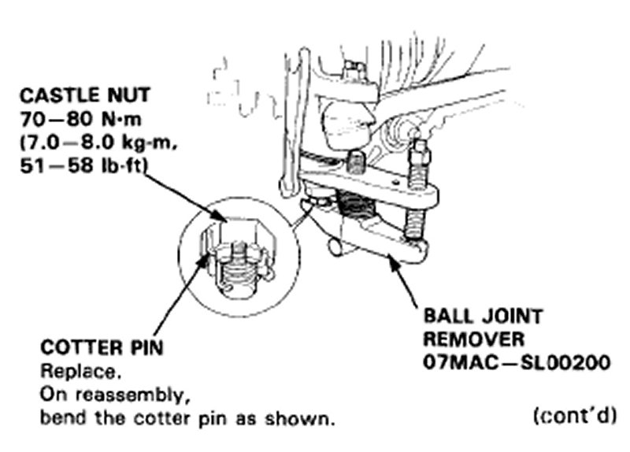
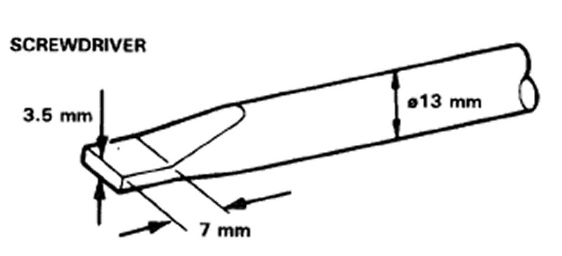
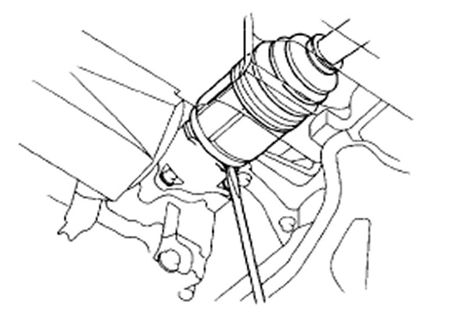
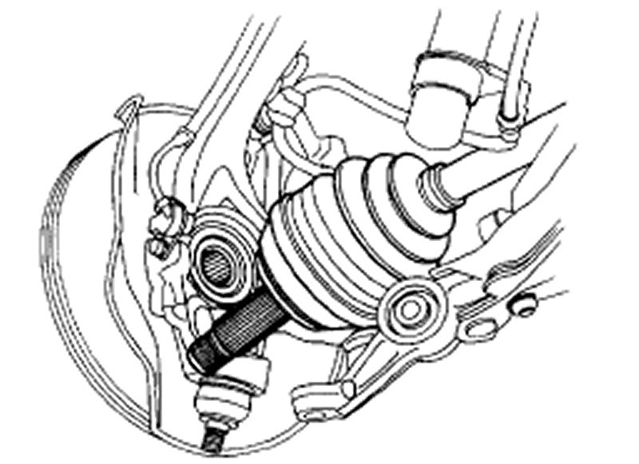

Removal and Installation
Driveshafts
Driveshaft Boot: Check the boots on the driveshaft for cracks, damage, leaking grease or loose boot bands. If any damage is found, replace the boot.
Spline Looseness: Turn the driveshaft by hand and make sure the spline and joint are not excessively loose. If damage is found, replace the inboard joint.
Twisted or Cracked: Make sure the driveshaft is not twisted or cracked. Replace if necessary.
1. Raise the car and place safety stands in the proper locations.
2. Remove the front wheels.
NOTE: Before installing the wheel, clean the mating surfaces of the brake disc and inside of the wheel.
3. Drain the differential oil.
NOTE: It is not necessary to drain the differential oil when the left driveshaft is removed.

4. Raise the locking tab on the spindle nut and loosen it.
5. Remove the damper fork nut and damper pinch bolt.

6. Remove the damper fork.
7. Remove the cotter pin from the lower arm ball joint castle nut and remove the nut.
8. Install the 14 mm hex nut on the ball joint. Be sure that the 14 mm hex nut is flush with the ball joint pin end, or the threaded section of the ball joint pin might be damaged by the ball joint remover.
NOTE: Use the ball joint remover (07MACSL00200) by adjusting it so that its upper section and lower section are parallel to each other.

9. Position the special tool between the knuckle and lower arm as shown, then separate the lower arm.
CAUTION:
Be careful not to damage the ball joint boot . Torque the castle nut to the lower torque specification, then tighten it only far enough to align the slot with the pin hole. Do not align the nut by loosening.

10. Pry the driveshaft assembly with a screwdriver as shown to force the set ring past the groove.

11. Pull the inboard joint and remove the driveshaft and CV joint from the differential case or intermediate shaft as an assembly.
CAUTION:
Do not pull on the driveshaft, as the CV joint may come apart. Use care when prying out the assembly and pull it straight to avoid damaging the differential oil seal or intermediate shaft dust seal.
12. Remove the spindle nut.

13. Pull the knuckle outward and remove the driveshaft outboard joint from the front wheel hub using a plastic hammer.
14. Installation is the reverse order of removal.
15. After installing the driveshafts, adjust the wheel alignment.